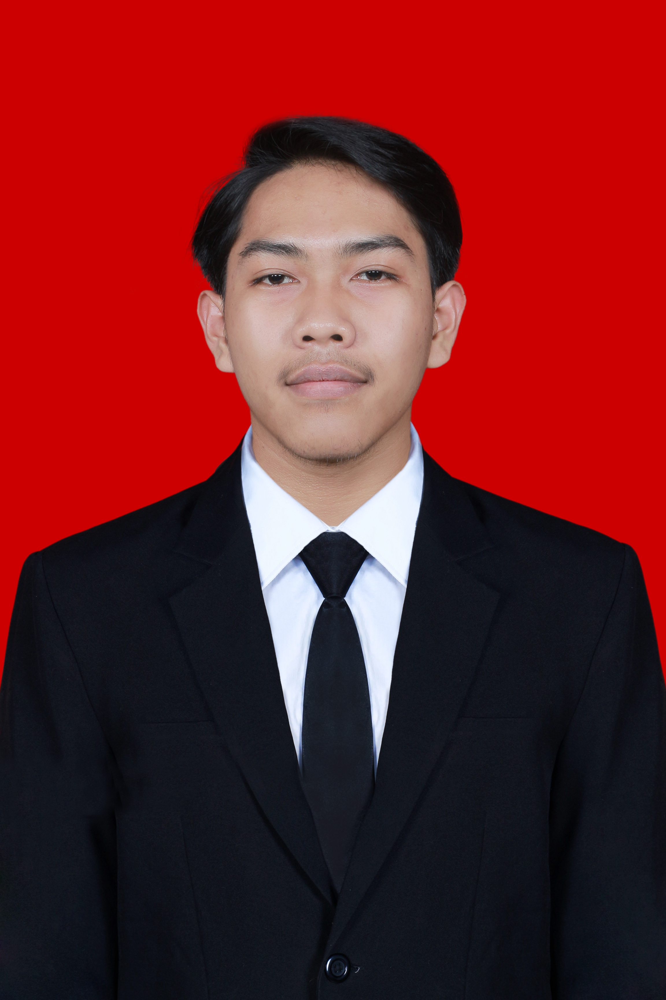
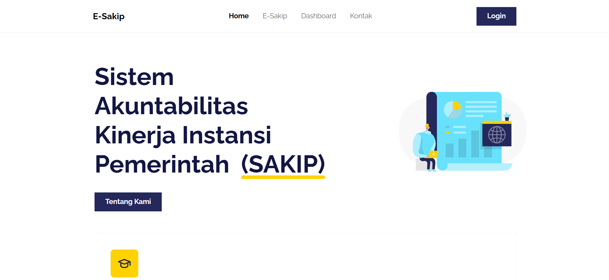
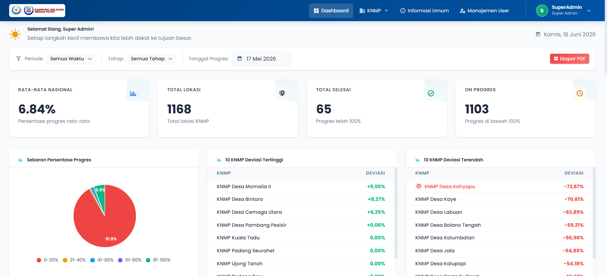
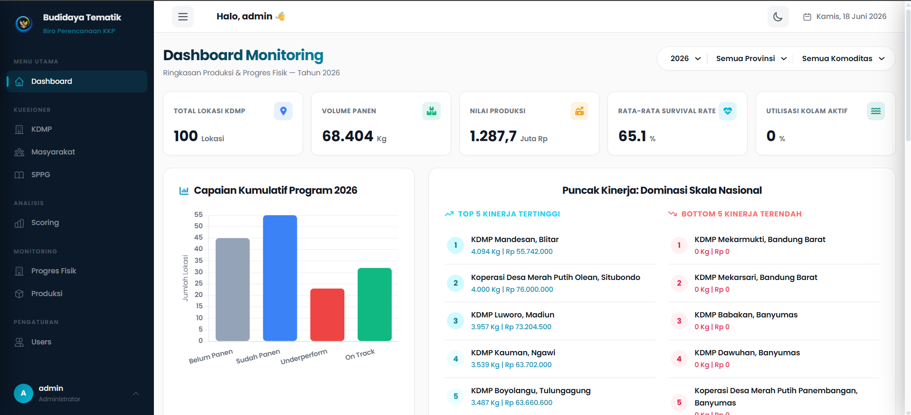
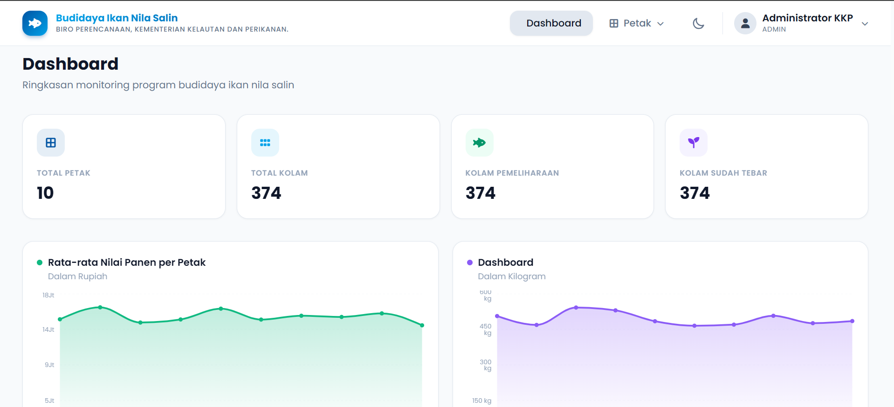
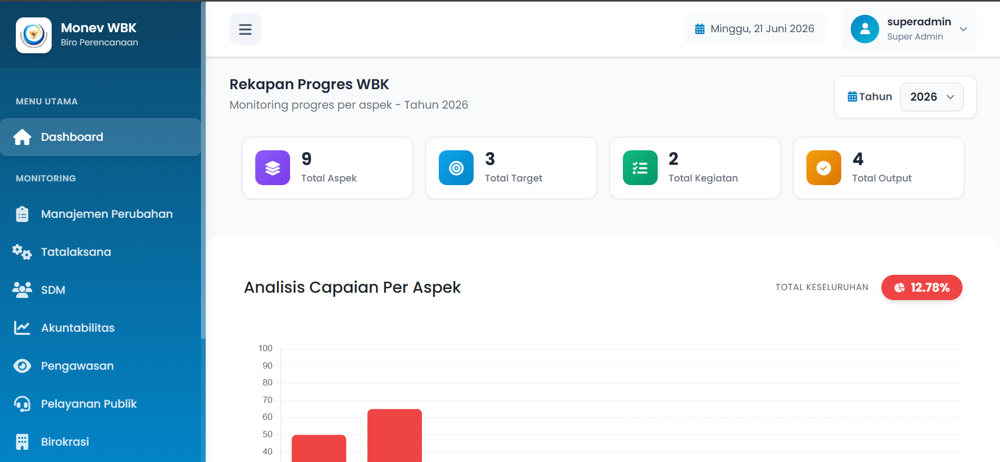
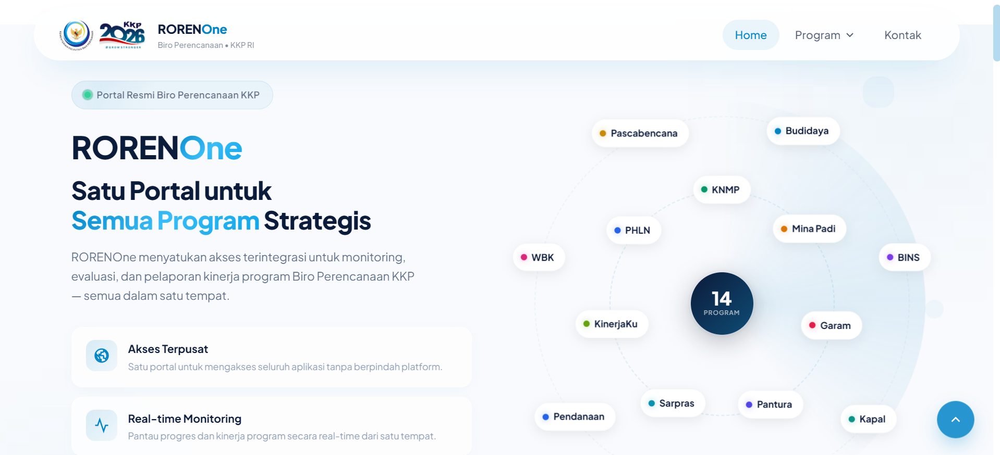

|
Full Stack Developer & Software Engineer dengan rekam jejak dalam membangun sistem informasi tangguh, dashboard analitis interaktif, dan aplikasi berbasis web yang responsif, aman, serta siap pakai untuk skala produksi.
const developer = {
name: 'Adi Abdul Rozaq',
role: 'Full Stack Developer',
experience: 1.5, // years
skills: [
'Laravel', 'React.js',
'MySQL', 'Tailwind CSS'
],
passion: 'Clean Code & Performance'
};
Saya adalah seorang Full Stack Developer lulusan Teknik Informatika dari Universitas Muhammadiyah Purwokerto (Cumlaude, IPK 3.59). Dengan rekam jejak yang solid dalam memecahkan masalah rekayasa perangkat lunak melalui program Magang Nasional Kemnaker di Biro Perencanaan Kementerian Kelautan dan Perikanan serta Sekretariat Daerah Kabupaten Banjarnegara, saya mahir dalam membangun sistem dari awal hingga tahap deployment.
Saya memiliki keahlian mendalam pada ekosistem JavaScript modern (React.js, Node.js) dan PHP (Laravel), dengan fokus utama pada perancangan arsitektur database relasional yang optimal, pengembangan RESTful API yang aman, serta implementasi interface pengguna yang intuitif.
Di setiap baris kode yang saya tulis, saya senantiasa memprioritaskan prinsip Clean Code, kemudahan pemeliharaan (maintainability), skalabilitas sistem (scalability), serta optimasi performa demi menghadirkan user experience yang luar biasa dan bernilai nyata.
Januari 2025 – September 2025 | Magang | Sekretariat Daerah Kabupaten Banjarnegara
September 2025 – Mei 2026 | Magang Nasional Kemmaker | Biro Perencanaan, Kementerian Kelautan dan Perikanan
Universitas Muhammadiyah Purwokerto
IPK: 3.59 / 4.00 — Cumlaude

Sistem akuntabilitas kinerja instansi digital Kabupaten Banjarnegara yang mengelola dokumen perencanaan strategis, indikator kinerja, pelaporan tahunan, dan evaluasi berkala guna mendukung transparansi tata kelola pemerintahan.

Sistem dashboard analitis Kampung Nelayan Modern (KNMP) berbasis web untuk monitoring, evaluasi, dan pelacakan program prioritas Presiden. Mengintegrasikan survei analitik kandidat lokasi di 37 provinsi dan menyajikan visualisasi data yang komprehensif.

Aplikasi monitoring terintegrasi berbasis web untuk pemantauan, survei lapangan, dan pendataan progres lokasi program budidaya tematik perikanan (lele, udang, dll) guna memfasilitasi pengambilan keputusan berbasis data real-time.

Dashboard Monitoring Program Prioritas guna memmonitoring Budidaya Ikan Nila Salin seluruh sebaran di Indonesia

Dashboard Monitoring program Wilayah Bebas Korupsi (WBK)

Portal untuk menampung semua sistem yang ada di Biro Perencanaan
Saya selalu terbuka untuk mendiskusikan peluang kerja, proyek freelance, atau kolaborasi menarik lainnya.